trianguloscabri300
|
Redescubrir en Geometría
|
|
|
Introducción
El título de este artículo está basado en el de
un buen libro de Miguel de Guzmán, cuya portada se muestra en la
imagen: La Experiencia de Descubrir en Geometría.
En dicho libro vemos ejemplos de que es posible hallar resultados nuevos
en Geometría, ejemplos donde Miguel de Guzmán une su gran
valía como investigador y la ayuda que las nuevas tecnologías
ponen a nuestro alcance.
El propósito de este artículo no es tan ambicioso, pues
apenas mostraremos algún resultado que la mayoría no conozca,
pero sí queremos indicar la manera de seguir los pasos que otros
hayan dado, sin olvidar que en estas lides el camino es tan apasionante
como el destino de nuestro viaje.
(reproducido con permiso de Editorial Nivola a quien el director agradece la atención)
Comencemos...
|
 |
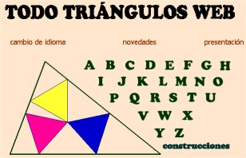 Punto
de partida y herramientas
Un buen punto de partida puede ser la página TTW de Quim
Castellsaguer en la que podemos encontrar prácticamente todos
los conceptos y resultados relacionados con la geometría del triángulo.
Se trataría de una obra titánica si cada resultado tuviera
en dichas páginas también su demostración, pero también
es verdad que la ausencia de la misma puede motivarnos a investigar por
nuestra cuenta y quién sabe si ello pueda llevarnos por nuevos
derroteros.
Para nuestro propósito nos equiparemos con tres herramientas:
- El programa de geometría dinámica Cabri-Géomètre,
en cualquiera de sus versiones.
- El programa de cálculo simbólico Mathematica,
también en cualquiera de sus versiones.
- Las coordenadas
baricéntricas. Usaremos la obra de referencia de Paul
Yiu y el cuaderno Baricentricas.nb
que ya hemos utilizado en varias ocasiones al resolver problemas aparecidos
en la página de Ricardo Barroso Campos. Para esta ocasión
hemos añadido al cuaderno algunas rutinas para efectuar algunos
cálculos con cónicas.
En esta ocasión trabajaremos con el punto de Clawson de un triángulo.
|
El punto de Clawson
En TTW podemos leer sobre el punto de Clawson:
- Definición. El punto de Clawson del triángulo
ABC es el centro de homotecia entre A'B'C', triángulo órtico
de ABC, y A"B"C", triángulo extangencial de ABC.
Es el punto X19 de ETC.
- Teorema 1. Los puntos de tangencia entre las circunferencias
exinscritas y las prolongaciones de los lados del triángulo están
en una cónica, que tiene el centro X alineado con el simediano
K y con el punto de Clawson.
|
El punto de Clawson: lo que ya está hecho
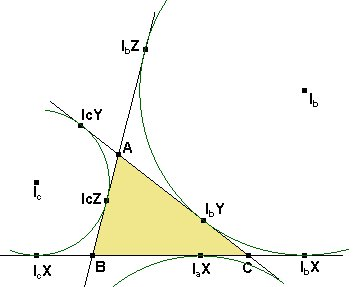 En primer
lugar, elijamos una notación para los puntos de contacto de las
circunferencias exinscritas con los lados del triángulo ABC
o sus prolongaciones. Cada punto se nombra con la letra I seguida
de una letra a, b, c que se refiere a la circunferencia
y una letra X, Y, Z que se refiere a la recta BC,
CA, o AB respectivamente. Esta notación aunque un
poco engorrosa tiene la ventaja de ser fácil de recordar.
El triángulo órtico A'B'C' es fácil de dibujar.
Para obtener el triángulo extangencial A"B"C"
hallaremos las rectas simétricas de BC, CA, AB
respecto de las rectas IbIc, IcIa e IaIb, respectivamente.
|
La figura obtenida sería la siguiente:
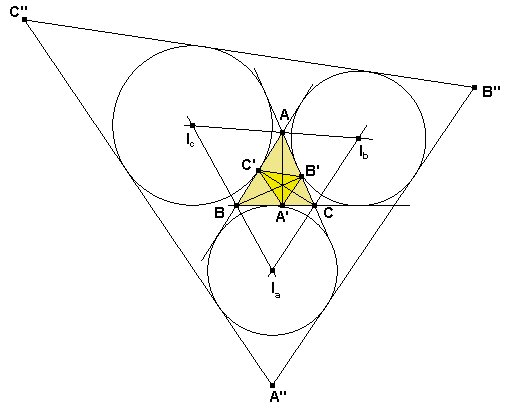
Los vértices del triángulo órtico los obtenemos
así:
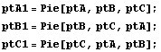
Para hacer las coordenadas de los vértices del triángulo extangencial
necesitamos necesitamos saber las coordenadas de los puntos de contacto de las
circunferencias exinscritas con las prolongaciones.
Para ello, recordamos que, por ejemplo, es B(IbX)
= s y C(IbX) = s-a. Entonces B(IbX):(IbX)C
= -s:s-a y IbX = (0:s-a:-s).
De la misma forma podemos hallar todos los demás puntos de contacto.
Entonces podemos introducir en Mathematica las coordenadas de todos estos
puntos así:
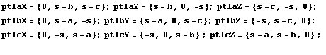
Ahora hallamos las rectas simétricas de las rectas BC, CA, AB
respecto de I_bI_c, I_cI_a, I_aI_b, respectivamente.
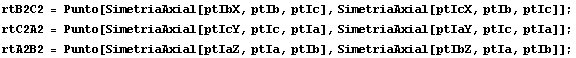
Finalmente hallamos los puntos de intersección de estas rectas:
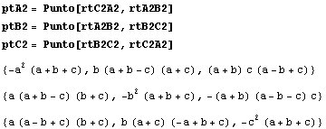
Ahora podemos comprobar que las rectas A'A", B'B" y
C'C" son concurrentes:
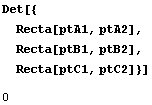
Además las rectas B'C' y B"C" son paralelas,
pues se cortan en un punto cuyas coordenadas suman 0, un punto de la recta del
infinito:
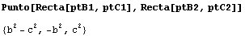
De la misma forma, los otros pares de rectas también son paralelos y
los triángulos A'B'C' y A"B"C" son homotéticos.
Para hallar el centro de la homotecia, hallaremos la intersección de
A'A" y B'B":
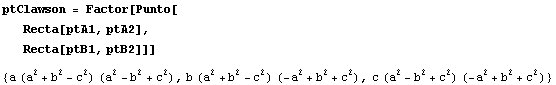
Este punto puede escribirse en la forma
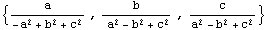
y teniendo en cuenta que según el teorema del coseno y el teorema de
los senos es
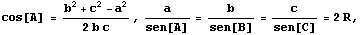
podemos expresar
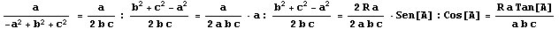
y entonces
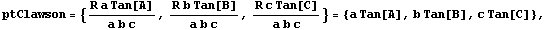
que es como aparece el punto de Clawson en la ETC de Clark Kimberling. También
podemos calcular la coordenada de búsqueda en la ETC del punto que hemos
hallado:
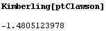
Buscando esta coordenada en la página de búsqueda de la ETC encontramos
que, efectivamente, corresponde a X19.
El punto de Clawson: investiguemos un poco más
Con un poco más de trabajo podemos hallar la razón de homotecia:
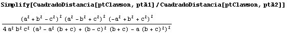
La razón de homotecia queda calculada salvo un signo. Para determinarla
completamente probamos a dividir el segmento A'A" con una de las
posibilidades, y al obtener el punto de Clawson sabemos que es la correcta:
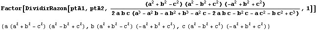
Por tanto deducimos que la homotecia que lleva A"B"C" en A'B'C'
viene dada por
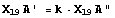
siendo
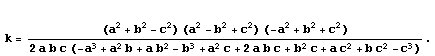
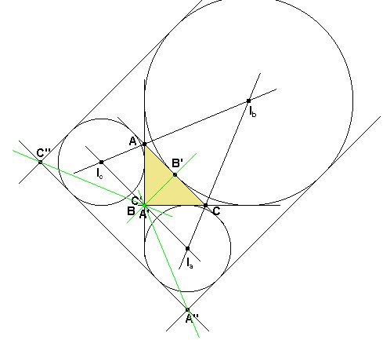
Las fórmulas
vistas hasta aquí nos dicen que la situación será especial
en el caso de un triángulo rectángulo. Consideremos por ejemplo
un triángulo rectángulo en B, y hagamos la figura con Cabri,
que se muestra a la derecha.
Entonces el triángulo órtico A'B'C' degenera en un segmento
en el que B' es pie de B sobre CA y A'= B
= C'.
Si ABC es rectángulo en B,el triángulo extangencial
también es extraño, pues las rectas A"B" y B"C"
resultan paralelas y B" es un punto del infinito.
Esto lo podemos comprobar hallando la suma de las coordenadas (traza en terminología
de matrices) del punto B, y comprobando que se anula cuando el triángulo
ABC es rectángulo en B:
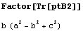
El punto de Clawson coincide con el vértice B.
Observemos que en este caso de que el triángulo ABC sea rectángulo
en B, se cumplen las relaciones
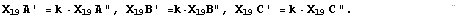
En efecto, en este caso tenemos k=0, y por un lado,
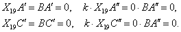
Por otro lado tenemos
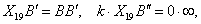
resultado que es indeterminado. Casi podemos decir que se cumplen las tres relaciones.
La cónica de Yiu: lo que ya está hecho
Vamos a comprobar que es cierto el mencionado
Teorema 1. Los puntos de tangencia entre las circunferencias exinscritas
y las prolongaciones de los lados del triángulo están en una cónica,
que tiene el centro X alineado con el simediano K y con el punto de Clawson.
Además resultará que el punto X está catalogado como X478
en la ETC de Clark Kimberling.
Hallamos ecuación de la cónica que pasa por cinco de los seis
puntos de contacto.
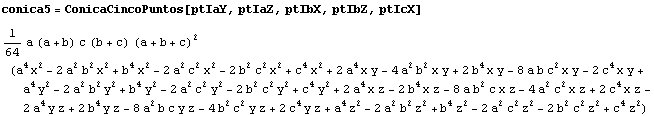
Ahora sustituimos por el sexto punto de contacto (ptIcY) y comprobamos
que pertenece a la cónica.
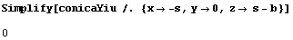
Simplifiquemos un poco la ecuación quitando los factores no nulos:
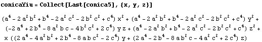
Podemos hallar el centro de la cónica:
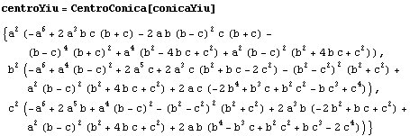
Comprobamos que dicho centro ya está catalogado en la ETC de Clark Kimberling:
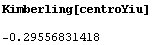
Ahora comprobamos lo afirmado por el teorema 1, que el punto de Clawson, el
punto simediano K y el centro de la cónica están alineados, introducciendo
directamente las coordenadas del punto simediano:
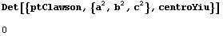
La cónica de Yiu: investiguemos un poco más.
Puede ser interesante determinar en qué casos la cónica es una
elipse, una parábola o una hipérbola. Ello se hace en coordenadas
baricéntricas resolviendo el sistema formado por la ecuación de
la cónica y la recta x+y+z=0, la recta del infinito. Según que
haya dos soluciones, una o ninguna se tratará de una hipérbola,
una parábola o una elipse.
La siguiente función calcula el discriminante de la ecuación
de segundo grado resultante del sistema anterior, por lo que cuando sea positivo,
nulo o negativo se tratará de una hipérbola, parábola o
elipse, respectivamente.
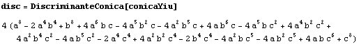
Una forma de hacernos una idea de a qué triángulos corresponde
que esta expresión sea nula es fijar el segmento BC de manera que B=(-1,0)
y C=(1,0) y dejar libre el vértice A=(x,y). Sustituyendo los valores
de a, b, c para este triángulo obtendremos una ecuación f(x,y).

Los puntos A correspondientes a f(x,y)=0 darán lugar a triángulos
ABC donde la cónica será una parábola. Si es +f(x,y)>0
tendremos una hipérbola y si f(x,y)<0 una elipse. Desgraciadamente,
en este caso la ecuación resultante es bastante complicada:
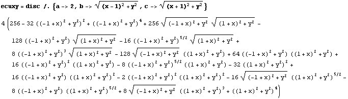
Sin embargo, la función ImplicitPlot de Mathematica es
capaz de representarla.
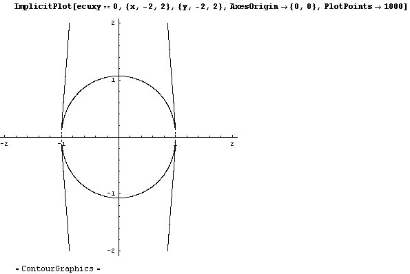
En las zonas coloreadas en amarillo en la figura siguiente tendremos una hipérbola,
y en las coloreadas en verde tendremos una elipse, mientras que sólo
habrá una parábola en los puntos de la curva.
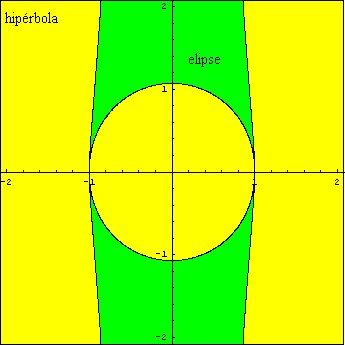